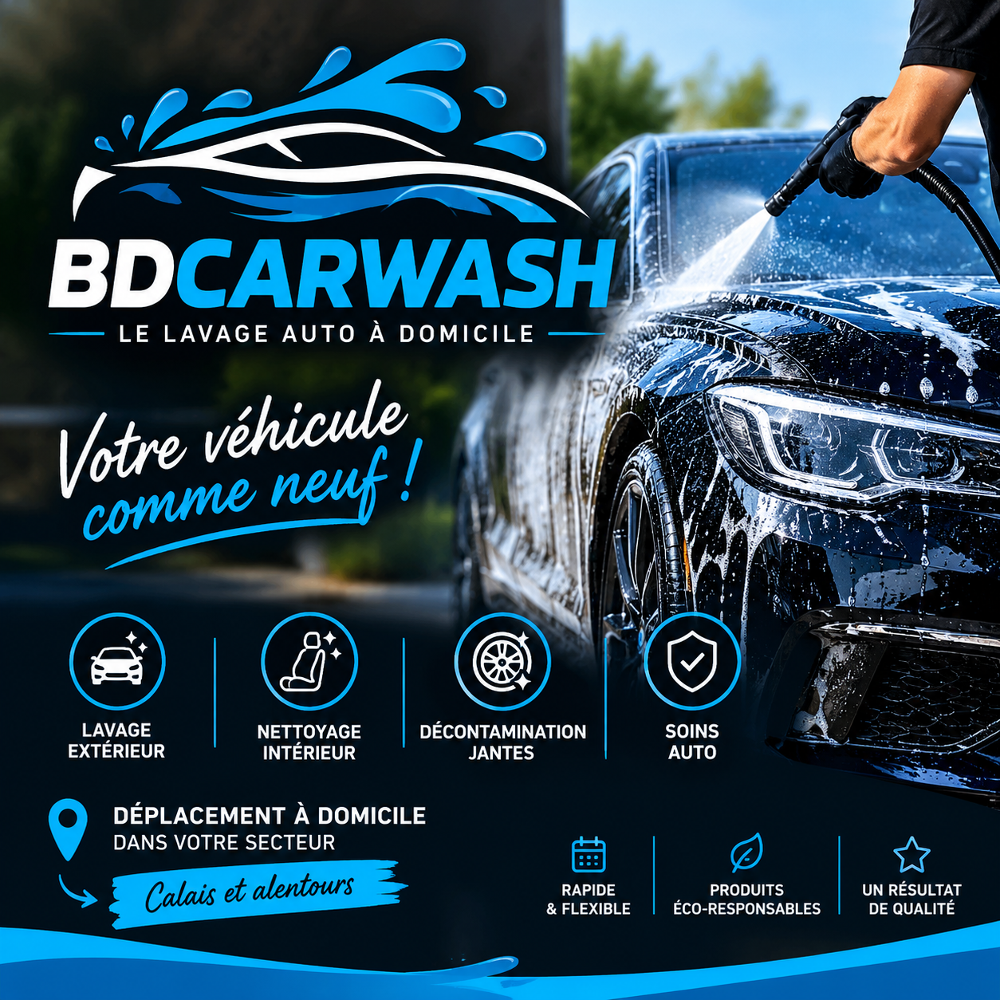

Votre voiture.
Notre savoir-faire.
Nettoyage automobile à domicile ou sur votre lieu de travail dans le Nord et le Pas-de-Calais, pour particuliers et professionnels.
Prendre rendez-vousNos services
✨ Extérieur
Nettoyage complet de l'extérieur du véhicule jusqu'aux jantes.
🧼 Intérieur
Nettoyage de l'habitacle au pinceau avec des produits professionnels.
💎 Complet
Une prestation complète intérieur + extérieur.
Nos tarifs
Tarifs de départ. Ils peuvent varier selon l'état et le gabarit du véhicule.
Essentiel / Extérieur
Lavage extérieur jusqu'aux jantes.
Intérieur
Nettoyage intérieur au pinceau avec produits professionnels.
Premium / Complet
Nettoyage intérieur + extérieur.
Plus de détails
Nous nettoyons tout l'extérieur du véhicule jusqu'aux jantes pour un résultat propre et soigné.
Pour l'intérieur, nous travaillons au pinceau avec des produits professionnels adaptés aux différentes surfaces de l'habitacle.
Selon l'état du véhicule et son gabarit, les prix peuvent varier. Un devis adapté sera confirmé avant l'intervention.
Demande de rendez-vous
BDCARWASH
📞 07 77 91 87 44
✉️ bdcarwash62@gmail.com
📍 Nord & Pas-de-Calais